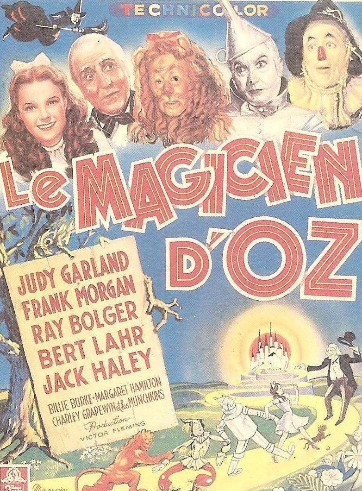
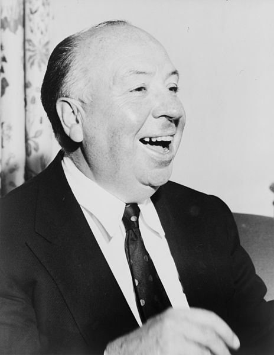
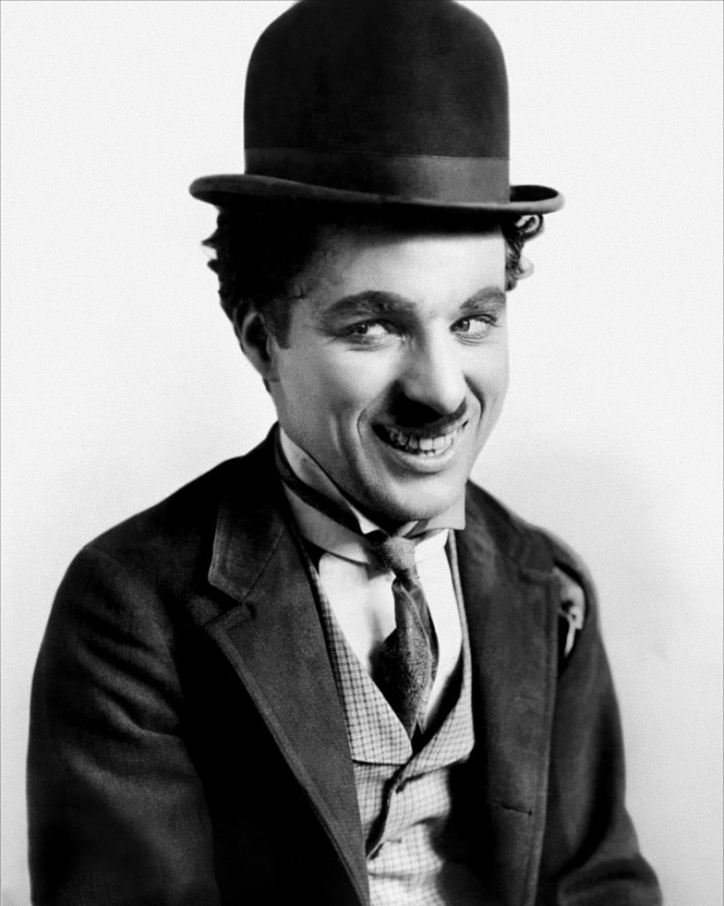

Pour moi, le cinéma n'est pas une tranche de vie, mais un morceau de gâteau.
Vous trouverez ci joint le films, l'acteur et le realisateur ayant eu le
plus d'impact dans le monde du cinema.
Vous trouverez la liste complete des 20 films ayant marqué le monde du
cinema encliquant ici
Le Magicien d'Oz
Le Magicien d'Oz s'impose comme le film le plus influent de tous les temps. Sorti en 1939, ce long-métrage musical adaptant le roman de L. Frank Baum est régulièrement cité dans les classements des plus grands films américains, et tient une place importante dans la culture populaire des années 1940 outre-Atlantique.
Alfred Hitchcock,
Surnommé « le Maître du suspense », il est considéré comme l'un des réalisateurs les plus influents sur le plan stylistique. Pionnier de nombreuses techniques dans le genre cinématographique du thriller, Hitchcock a installé les notions de suspense et de MacGuffin dans l'univers du cinéma.
Charlie Chaplin
Une icone du cinéma muet. Charlie Chaplin est l'inventeur de Charlot, l'un des personnages les plus célèbres de l'histoire du cinéma. Ce vagabond généreux et maladroit était le grand comique du cinéma muet dans les années 1910 et 1920.